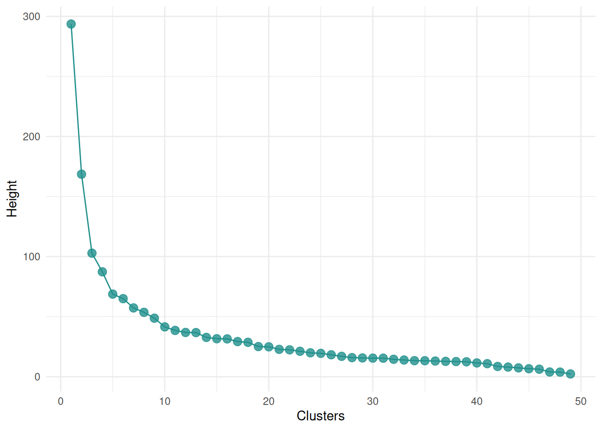
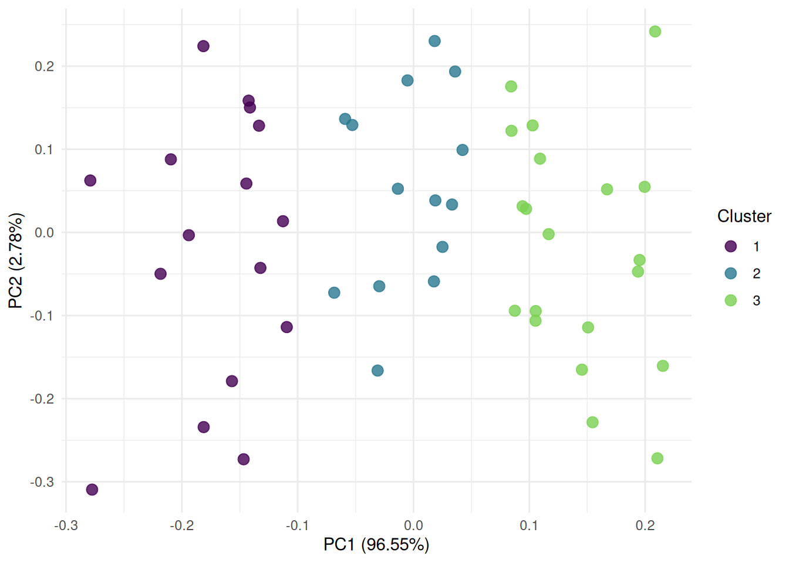
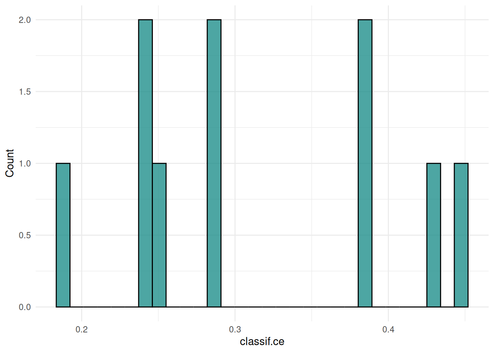
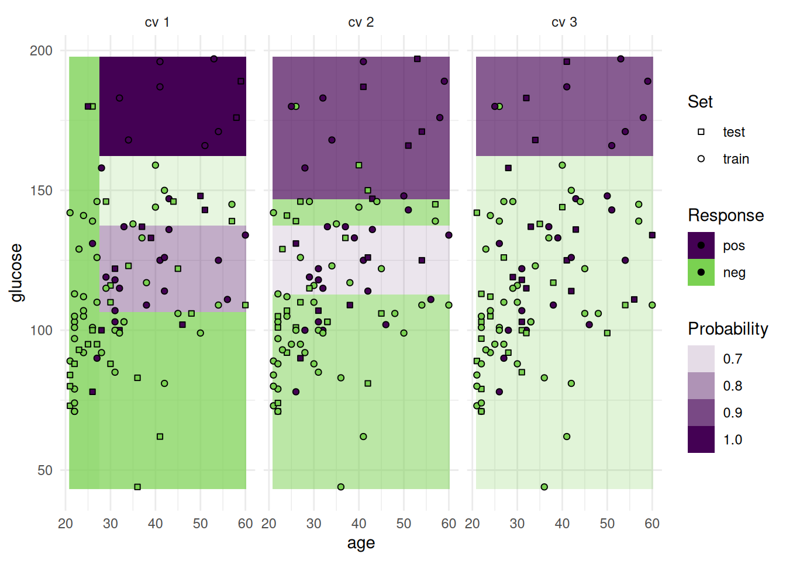
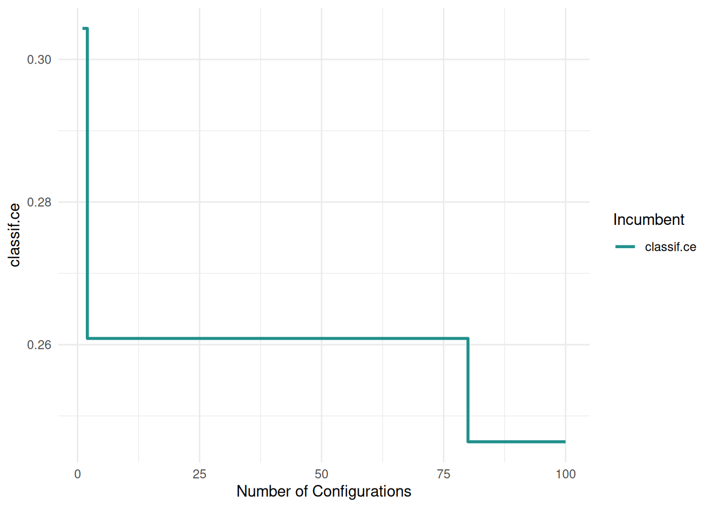

![]()
library(mlr3verse)
library(mlr3viz)
task = tsk("penguins")
task$select(c("body_mass", "bill_length"))
autoplot(task, type = "target")Scope
We showcase the visualization functions of the mlr3 ecosystem. The mlr3viz package creates a plot for almost all mlr3 objects. This post displays all available plots with their reproducible code. We start with plots of the base mlr3 objects. This includes boxplots of tasks, dendrograms of cluster learners and ROC curves of predictions. After that, we tune a classification tree and visualize the results. Finally, we show visualizations for filters.
Note
This article will be updated whenever a new plot is available in mlr3viz.
Package
The mlr3viz package defines autoplot() functions to draw plots with ggplot2. Often there is more than one type of plot for an object. You can change the plot with the type argument. The help pages list all possible choices. The easiest way to access the help pages is via the pkgdown website. The plots use the viridis color pallet and the appearance is controlled with the theme argument. By default, the minimal theme is applied.
Tasks
Classification
We begin with plots of the classification task Palmer Penguins. We plot the class frequency of the target variable.
The "duo" plot shows the distribution of multiple features.
autoplot(task, type = "duo")The "pairs" plot shows the pairwise comparison of multiple features. The classes of the target variable are shown in different colors.
autoplot(task, type = "pairs")Regression
Next, we plot the regression task mtcars. We create a boxplot of the target variable.
task = tsk("mtcars")
task$select(c("am", "carb"))
autoplot(task, type = "target")The "pairs" plot shows the pairwise comparison of mutiple features and the target variable.
autoplot(task, type = "pairs")Cluster
Finally, we plot the cluster task US Arrests. The "pairs" plot shows the pairwise comparison of mutiple features.
library(mlr3cluster)
task = mlr_tasks$get("usarrests")
autoplot(task, type = "pairs")Learner
Classification
The "prediction" plot shows the decision boundary of a classification learner and the true class labels as points.
task = tsk("pima")$select(c("age", "pedigree"))
learner = lrn("classif.rpart")
learner$train(task)
autoplot(learner, type = "prediction", task)Using probabilities.
task = tsk("pima")$select(c("age", "pedigree"))
learner = lrn("classif.rpart", predict_type = "prob")
learner$train(task)
autoplot(learner, type = "prediction", task)Regression
The "prediction" plot of a regression learner illustrates the decision boundary and the true response as points.
task = tsk("boston_housing")$select("age")
learner = lrn("regr.rpart")
learner$train(task)
autoplot(learner, type = "prediction", task)When using two features, the response surface is plotted in the background.
task = tsk("boston_housing")$select(c("age", "rm"))
learner = lrn("regr.rpart")
learner$train(task)
autoplot(learner, type = "prediction", task)GLMNet
The classification and regression GLMNet learner is equipped with a plot function.
library(mlr3data)
task = tsk("ilpd")
task$select(setdiff(task$feature_names, "gender"))
learner = lrn("classif.glmnet")
learner$train(task)
autoplot(learner, type = "ggfortify")task = tsk("mtcars")
learner = lrn("regr.glmnet")
learner$train(task)
autoplot(learner, type = "ggfortify")
Rpart
We plot a classification tree of the rpart package. We have to fit the learner with keep_model = TRUE to keep the model object.
task = tsk("penguins")
learner = lrn("classif.rpart", keep_model = TRUE)
learner$train(task)
autoplot(learner, type = "ggparty")We can also plot regression trees.
task = tsk("mtcars")
learner = lrn("regr.rpart", keep_model = TRUE)
learner$train(task)
autoplot(learner, type = "ggparty")ClustHierachical
The "dend" plot shows the result of the hierarchical clustering of the data.
library(mlr3cluster)
task = tsk("usarrests")
learner = lrn("clust.hclust")
learner$train(task)
autoplot(learner, type = "dend", task = task)The "scree" type plots the number of clusters and the height.
autoplot(learner, type = "scree")
Prediction
Classification
We plot the predictions of a classification learner. The "stacked" plot shows the predicted and true class labels.
task = tsk("spam")
learner = lrn("classif.rpart", predict_type = "prob")
pred = learner$train(task)$predict(task)
autoplot(pred, type = "stacked")The ROC curve plots the true positive rate against the false positive rate at different thresholds.
autoplot(pred, type = "roc")The precision-recall curve plots the precision against the recall at different thresholds.
autoplot(pred, type = "prc")The "threshold" plot varies the threshold of a binary classification and plots against the resulting performance.
autoplot(pred, type = "threshold")Regression
The predictions of a regression learner are often presented as a scatterplot of truth and predicted response.
task = tsk("boston_housing")
learner = lrn("regr.rpart")
pred = learner$train(task)$predict(task)
autoplot(pred, type = "xy")Additionally, we plot the response with the residuals.
autoplot(pred, type = "residual")We can also plot the distribution of the residuals.
autoplot(pred, type = "histogram")Cluster
The predictions of a cluster learner are often presented as a scatterplot of the data points colored by the cluster.
library(mlr3cluster)
task = tsk("usarrests")
learner = lrn("clust.kmeans", centers = 3)
pred = learner$train(task)$predict(task)
autoplot(pred, task, type = "scatter")The "sil" plot shows the silhouette width of the clusters. The dashed line is the mean silhouette width.
autoplot(pred, task, type = "sil")The "pca" plot shows the first two principal components of the data colored by the cluster.
autoplot(pred, task, type = "pca")
Resample Result
Classification
The "boxplot" shows the distribution of the performance measures.
task = tsk("sonar")
learner = lrn("classif.rpart", predict_type = "prob")
resampling = rsmp("cv")
rr = resample(task, learner, resampling)
autoplot(rr, type = "boxplot")We can also plot the distribution of the performance measures as a “histogram”.
autoplot(rr, type = "histogram")
The ROC curve plots the true positive rate against the false positive rate at different thresholds.
autoplot(rr, type = "roc")The precision-recall curve plots the precision against the recall at different thresholds.
autoplot(rr, type = "prc")The "prediction" plot shows two features and the predicted class in the background. Points mark the observations of the test set and the color presents the truth.
task = tsk("pima")
task$filter(seq(100))
task$select(c("age", "glucose"))
learner = lrn("classif.rpart")
resampling = rsmp("cv", folds = 3)
rr = resample(task, learner, resampling, store_models = TRUE)
autoplot(rr, type = "prediction")Alternatively, we can plot class probabilities.
task = tsk("pima")
task$filter(seq(100))
task$select(c("age", "glucose"))
learner = lrn("classif.rpart", predict_type = "prob")
resampling = rsmp("cv", folds = 3)
rr = resample(task, learner, resampling, store_models = TRUE)
autoplot(rr, type = "prediction")In addition to the test set, we can also plot the train set.
task = tsk("pima")
task$filter(seq(100))
task$select(c("age", "glucose"))
learner = lrn("classif.rpart", predict_type = "prob", predict_sets = c("train", "test"))
resampling = rsmp("cv", folds = 3)
rr = resample(task, learner, resampling, store_models = TRUE)
autoplot(rr, type = "prediction", predict_sets = c("train", "test"))
The "prediction" plot can also show categorical features.
task = tsk("german_credit")
task$filter(seq(100))
task$select(c("housing", "employment_duration"))
learner = lrn("classif.rpart")
resampling = rsmp("cv", folds = 3)
rr = resample(task, learner, resampling, store_models = TRUE)
autoplot(rr, type = "prediction")Regression
The “prediction†plot shows one feature and the response. Points mark the observations of the test set.
task = tsk("boston_housing")
task$select("age")
task$filter(seq(100))
learner = lrn("regr.rpart")
resampling = rsmp("cv", folds = 3)
rr = resample(task, learner, resampling, store_models = TRUE)
autoplot(rr, type = "prediction")Additionally, we can add confidence bounds.
task = tsk("boston_housing")
task$select("age")
task$filter(seq(100))
learner = lrn("regr.lm", predict_type = "se")
resampling = rsmp("cv", folds = 3)
rr = resample(task, learner, resampling, store_models = TRUE)
autoplot(rr, type = "prediction")And add the train set.
task = tsk("boston_housing")
task$select("age")
task$filter(seq(100))
learner = lrn("regr.lm", predict_type = "se", predict_sets = c("train", "test"))
resampling = rsmp("cv", folds = 3)
rr = resample(task, learner, resampling, store_models = TRUE)
autoplot(rr, type = "prediction", predict_sets = c("train", "test"))
We can also add the prediction surface to the background.
task = tsk("boston_housing")
task$select(c("age", "rm"))
task$filter(seq(100))
learner = lrn("regr.rpart")
resampling = rsmp("cv", folds = 3)
rr = resample(task, learner, resampling, store_models = TRUE)
autoplot(rr, type = "prediction")Benchmark Result
We show the performance distribution of a benchmark with multiple tasks.
tasks = tsks(c("pima", "sonar"))
learner = lrns(c("classif.featureless", "classif.rpart", "classif.xgboost"), predict_type = "prob")
resampling = rsmps("cv")
bmr = benchmark(benchmark_grid(tasks, learner, resampling))
autoplot(bmr, type = "boxplot")We plot a benchmark result with one task and multiple learners.
tasks = tsk("pima")
learner = lrns(c("classif.featureless", "classif.rpart", "classif.xgboost"), predict_type = "prob")
resampling = rsmps("cv")
bmr = benchmark(benchmark_grid(tasks, learner, resampling))We plot an roc curve for each learner.
autoplot(bmr, type = "roc")Alternatively, we can plot precision-recall curves.
autoplot(bmr, type = "prc")Tuning Instance
We tune the hyperparameters of a decision tree on the sonar task. The "performance" plot shows the performance over batches.
library(mlr3tuning)
library(mlr3tuningspaces)
library(mlr3learners)
instance = tune(
tuner = tnr("gensa"),
task = tsk("sonar"),
learner = lts(lrn("classif.rpart")),
resampling = rsmp("holdout"),
measures = msr("classif.ce"),
term_evals = 100
)
autoplot(instance, type = "performance")
The "incumbent" plot shows the performance of the best hyperparameter setting over the number of evaluations.
autoplot(instance, type = "incumbent")
The "parameter" plot shows the performance for each hyperparameter setting.
autoplot(instance, type = "parameter", cols_x = c("cp", "minsplit"))The "marginal" plot shows the performance of different hyperparameter values. The color indicates the batch.
autoplot(instance, type = "marginal", cols_x = "cp")The "parallel" plot visualizes the relationship of hyperparameters.
autoplot(instance, type = "parallel")We plot cp against minsplit and color the points by the performance.
autoplot(instance, type = "points", cols_x = c("cp", "minsplit"))Next, we plot all hyperparameters against each other.
autoplot(instance, type = "pairs")We plot the performance surface of two hyperparameters. The surface is interpolated with a learner.
autoplot(instance, type = "surface", cols_x = c("cp", "minsplit"), learner = mlr3::lrn("regr.ranger"))Filter
We plot filter scores for the mtcars task.
library(mlr3filters)
task = tsk("mtcars")
f = flt("correlation")
f$calculate(task)
autoplot(f, n = 5)Conclusion
The mlr3viz package brings together the visualization functions of the mlr3 ecosystem. All plots are drawn with the autoplot() function and the appearance can be customized with the theme argument. If you need to highly customize a plot e.g. for a publication, we encourage you to check our code on GitHub. The code should be easily adaptable to your needs. We are also looking forward to new visualizations. You can suggest new plots in an issue on GitHub.